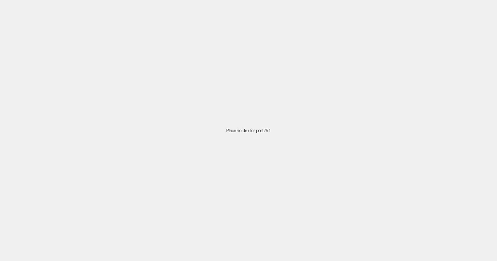

Local SEO for Musicians and Bands: Striking a Chord with Local Audiences in 2026

In the evolving landscape of the music industry, local presence is more critical than ever for musicians and bands looking to build a dedicated fanbase and secure consistent gigs. While national and international exposure is a long-term goal, local SEO (Search Engine Optimization) is the foundational strategy that can help artists connect directly with their community, ensuring they’re found by local venues, event organizers, and fans.
Why Local SEO is Your New Tour Manager
Think of local SEO as your digital tour manager, constantly working to put you in front of the right local audience. In 2026, with the rise of hyper-local search queries and AI-powered recommendations, optimizing for local search isn't just an option—it's a necessity. Here's why:
- Local Gig Opportunities: Venues, festivals, and private event organizers often search online for local talent. Strong local SEO makes you visible when they’re looking.
- Fan Engagement: Local fans are your most loyal supporters. Being easily discoverable means more people at your shows, more merchandise sold, and stronger word-of-mouth.
- Community Building: Establishing a strong local presence helps you become a recognized name within your community, opening doors for collaborations, sponsorships, and local media features.
- Reduced Competition: While the global music scene is saturated, competition at the local level can be more manageable, allowing you to carve out your niche.
Key Local SEO Strategies for Musicians and Bands in 2026
1. Optimize Your Google Business Profile (GBP)
Your Google Business Profile is the cornerstone of local SEO. It’s your free digital storefront on Google Search and Maps. For musicians and bands:
- Categorize Accurately: Use primary categories like "Musician," "Band," "Musical Group," or more specific genres if available.
- Service Areas: Define your service areas, which could be specific cities or regions where you perform.
- Posts & Updates: Regularly post about upcoming gigs, new releases, behind-the-scenes content, and special announcements using the GBP Posts feature.
- Photos & Videos: Upload high-quality photos and videos of your performances, rehearsals, and band members. Visuals are crucial for artists.
- Reviews: Encourage fans to leave reviews, especially after gigs. Respond to all reviews professionally.
2. Hyper-Local Keyword Research
Go beyond general music terms. Think about how local fans and bookers search:
- "live music [your city]"
- "[your genre] band [nearby town]"
- "wedding band [region]"
- "bands for hire [local venue name]"
Integrate these keywords naturally into your website, social media profiles, and GBP descriptions.
3. Local Citations and Directories
Ensure your Name, Address, and Phone number (NAP—or just Name and Phone if you don't have a physical address) are consistent across relevant online directories. For musicians, this includes:
- General directories (Yelp, Yellow Pages)
- Music-specific directories (Bandcamp, ReverbNation, local music blogs)
- Local event listings sites
4. Localized Content Creation
Create content that resonates with your local audience:
- Blog posts about "Best Live Music Venues in [Your City]" or "Top 5 Local Songs About [Local Landmark]."
- Videos showcasing your band performing at local events or iconic spots.
- Social media posts engaging with local news, businesses, and influencers.
5. Build Local Backlinks
Seek out opportunities for local websites to link back to your band's site. This could involve:
- Getting featured on local music blogs or news sites.
- Collaborating with local businesses for events or promotions.
- Having venues list your band on their "past performers" or "upcoming acts" pages.
The Future is Local: Stay Tuned in 2026
As search engines become even more sophisticated in understanding user intent and location, local SEO will continue to be a powerful tool for musicians and bands. By focusing on these strategies, you can ensure your music reaches the ears and hearts of your local community, leading to more packed shows, stronger connections, and a thriving musical career right in your backyard.